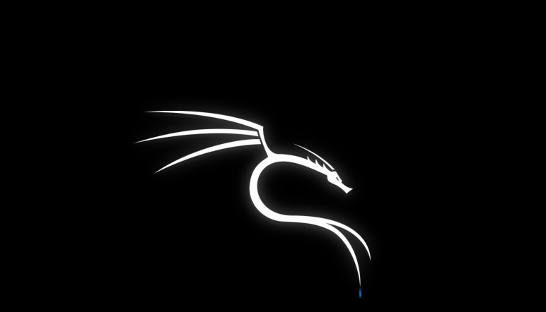

How to install Kali-Linux(With Video tutorial)
Kali Linux is a Linux distribution based on Debian. It is a free and open source operating system. It is a lightweight and fast operating system. In this tutorial, I will teach you the Installtion of Kali Linux in VMware workstation
Read More
List of TryHackMe Machines for free
If know about TryHackMe platform, you must have thought about buying the Subscription for more hacking virtual machines. But I have able to complie more than 100+ TryHackMe machine that cover from basics to advanced level, Windows & Linux Privillege Escalation, Exploit Development, Forensics, Penetration Testing, CTF(Capture the flag) and more. For Each TryHackMe targets, I will make a tutorial for you to learn my methodology.
Read More